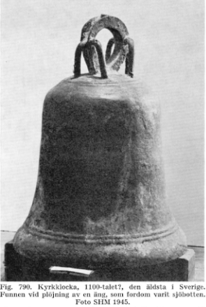

Det finns på många håll i landet sägner om sjöar där kyrkklockor ska ligga sänkta, tappade, gömda och sedan länge glömda. Som Frötunasjön, Norrtälje eller lite närmare vid en vik av Ösmarn kallad klockviken, Roslagsbro. Vid Brosjön vid Aspsund fanns dock ingen sådan sägen men skulle en dag bli verklighet. Kanske hade den lokala traditionen om en klocka vid Ösmaren egentligen haft sitt ursprung från Brosjön men genom generationer glömts bort eller förändrats.Under plöjning den 30 oktober 1916 påträffades en kyrkklocka i Aspsund av Gunnar Sandberg (RAA [16]). Fyndplatsen låg på ängen idag tillhörande Aspsund no 5 nära Brosjön på uppodlad före detta sjöbotten. Gunnar som var en tonåring vid den tiden gick efter familjens häst och plöjde. Plötsligt tog det stopp och han trodde det var ännu en sten som vi har gott om i dessa trakter. Efter en stunds grävande kom dock något helt annat fram och man kan ju förstå hans förvåning och hur han förmodligen genast kallade dit sin familj och grannar.
I ett brev från Gunnars far Ludvig Sandberg till Riksantikvarien (Unestam [3] sid 191) skrev han bl.a “Gossen körde fast med plogen i klockans bredd så kraftigt att billen på plogen lossnade”. Gunnar uppgav också att han precis hade lyft lite på ploghantagen vilket fick till följd att plogen skar några cm djupare än normalt. Klockan är helt slät, bikupbikupsformad, relativt liten (H:80, D:62) samt saknar ornering, kläpp och kläppfäste. Den är daterad 1100-tal och anses vara rikets äldsta bevarade kyrkklocka. På fyndplatsen vilade den på nedpackad vass vilket tyder på att den tappats, sänkts eller gömts nära strandkanten för länge sedan.
Hur klockan hade hamnat på platsen är okänt. Det finns inget nedtecknat eller ens sägner om detta utan endast nutida tolkningar. En variant som nämns av Gunilla Norberg (Larsson?) 1986 och som jag själv funderat mycket kring är kopplingen till pålspärren (ca 100 meter från fyndplatsen) och Karls kyrkoruin. Pålspärrar byggdes på många ställen längs med kusten under slutet av vikingatiden för att skydda sig mot så härjande Vendiska vikingar “Garpar” som kom från östra sidan av havet. Härjningarna pågick under senare delen av 1100-talet och början av 1200-talet. Dessa härjningar påverkade såväl utformning av traktens kyrkor och farleder. Karls kyrka byggdes under denna tid och fick kraftiga murar av försvarsskäl. Troligen fanns även ett stabilt byggt torn i kyrkan. Det finns traditioner att man vid ofredstid har hållit hästar i skydd inne i kyrkan. Inne i Karls kyrka finns också en brunn som kunde förse sockenborna med friskt vatten under en eventuell belägring. Vid en utgrävning av den brunnen hittades bland annat en stridsyxa. Det finns sägner och att Karls kyrka varit under attack och försvarats av ortsbor, varav folkets ledare senare blev helgonförklarad som St Karlung. Det är därmed ingen orimlig tanke att Vender gjorde strandhugg någon gång runt år 1200 vid Aspsund som var närmaste strandremsa till Karls kyrka. När de väl härjat och drog sig tilbaks till sina skepp tappades kyrkklockan vid lastning, alternativt gömdes den för att senare hämtas upp. Att man gjorde strandhugget vid just denna plats kan också stämma med att pålspärren i sundet då precis var inom synhåll och hindrade dem från att komma längre upp i farleden.
Det finns också tankar (Åmark [15] sid 33) om att ryssarna bortförde den vid härjningarna i Roslagen år 1719. Det är för mig dock okänt att ryssarna härjade just i våra trakter. Jag har aldrig läst eller hört om att byarna i Söderby och Karl brändes ned. År 1719 var sundet inte heller längre ett sund utan vattnet gick i en mer begränsad fåra likt idag. Möjligen lite bredare och djupare. Detta syns tydligen på kartor från den tiden. Att ryssarna skulle ha rott uppför den på 1700-talet ganska smala farleden medans karolinerna samlades i trakten under Överstelöjtnant Olof Lagerborg från Brölunda (boende något 100-tal meter från fyndplatsen) låter inte särskilt troligt.
Kyrkklockor gömdes också av sockenfolk runt om i landet undan Gustav Vasas regenttid under 1500-talet vilken lät gjuta om kyrkklockor till kanoner. Detta låter också för mig inte sannolikt. Varför sänka en tung klocka i sjön med besväret att senare kunna få upp den ur dyn? Då vore det ju såklart enklare att gräva ned klockan i jorden. Dessutom var denna klocka så mycket mindre än de klockor som då fanns vid traktens kyrkor.
Ytterligare en möjlig förklaring är att den tagits hem av någon av de hovslagare/smeder som tjänstgjorde under livregementet till häst och som bodde på Aspsund no 5 under åren 1682 till 1897. Kanske som krigsbyte eller som sidouppdrag att reparera åt närliggande kyrka eller herresäte. Kläpp och kläppfäste saknas och kanske skulle lagas? Vi vet tex att Fredrick Jordan (Regementshovslagare vid Aspsund från år 1712) smidde de takflöjlar som än idag sitter på Estuna kyrka och också satt med i Söderby kyrkoråd. Just denna äng kallas också hovslagarvreten och det har tidigare stått en smedja just där.